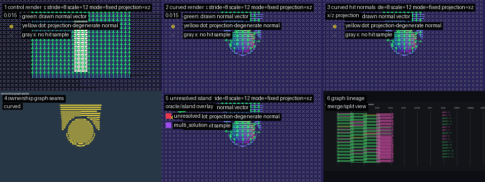
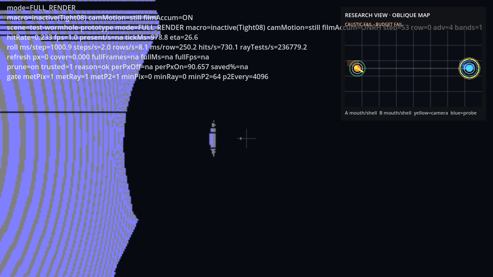

xPRIMEray Transport Observatory Overview¶

xPRIMEray is a curved-ray optical transport observatory built in Godot for visualizing propagation, boundary behavior, curvature domains, GRIN fields, wormhole seams, and observer-relative diagnostics.

What xPRIMEray Is¶
xPRIMEray operates on three levels simultaneously:
A ray transport engine that solves the eikonal ODE — ẋ = p/n(x), ṗ = ∇n(x) — for null geodesics through gradient-index (GRIN) media and Gordon effective metric fields. Rays are curved by the field; they are not faked with post-process lens distortion. Every render is validated against a hermetic fixture contract: 100% pixel classification, zero unresolved exits.
What this means in practice: give the engine a GRIN field source, a scene with geometry, and a camera — and it solves the correct geodesic transport for every pixel. The renderer finds hits, seams, high-curvature regions, and boundary events from the scene data, not from hardcoded special cases.
A visual diagnostics platform with a growing library of overlay modes. The observatory approach: let the model show what the model shows. Run an overlay, observe what the transport structure reveals. Do not assert conclusions until the renderer's own diagnostics confirm them independently.
Current active observatories: - Atomic Visual Observatory — multi-cell atomic orbital GRIN field comparison (V0-V4 cell × shading × contour) - Wormhole Structure Observatory — multi-panel transport structure visualization (clean_curved, dual-reality, depth, domain_diagnostics, minimap) - Domain Audit Visual — domain resolver impact heatmap suite (step budget, domain ownership, boundary confidence, normal discontinuity, selection flip)
A structured diagnostic infrastructure connecting renderer behavior to theoretical frameworks. The Cathedral Probe, ReferenceTransportOracle, and SceneTransportMemory systems separate multiple independent failure layers — scheduler-induced banding, local geometry seam instability, and transport island topology — that naive per-pixel analysis conflates.
Research produces findings, not proofs: empirical observations about transport behavior that the diagnostics can confirm or refute.
Why It Is a Transport Observatory¶
The engine does not try to prove gravity. It reveals transport structure.
When a ray terminates on a boundary, that is a boundary crossing event. When the domain resolver finds a seam between curvature zones, that is a domain transition. When two adjacent pixels disagree about which domain owns them, that is a selection flip. The renderer produces these as measurable, classifiable, visualizable events — not as narrative claims about physics.
This is the same intellectual posture as celestial holography: rather than working directly in a hard space (full Einstein gravity), look for equivalent descriptions that reveal the same structure more legibly. The Celestial Boundary Overlay (proposed) would do exactly this — project ray terminal angles onto a reference sphere, making the transport structure visible as a map.
What the engine asserts: transport paths, hit events, field geometry, curvature bounds, domain boundaries, and their visual signatures.
What the engine does not assert: that any of this is the correct description of real spacetime. These are geodesics of an effective GRIN metric. They are useful analogs, not proofs.
How the Systems Fit Together¶
Scene Setup
├── FieldSource3D (GRIN field: shape, profile, strength)
├── AtomicEigenmodeFieldSource3D (atomic orbital density field)
├── BoundaryLayerVolume (domain boundary + crossing policy)
└── Geometry (scene objects for hit detection)
Transport Pipeline
├── FieldTLAS (spatial acceleration for field queries)
├── CurvatureBoundGrid (pre-computed Kmax for step sizing)
├── MetricHeuristicIntegrator (2-point midpoint adaptive step)
├── GeometryTLAS (BVH AABB hit detection)
└── GrinFilmCamera (master: per-pixel ray → integration → hit)
Domain System
├── DomainTelemetry (CurvatureDomainKind per pixel)
├── ObjectSeededTileScheduler (transport ownership + DecisionRisk)
└── Domain resolver (inside GrinFilmCamera)
Diagnostic / Research Layer
├── ReferenceTransportOracle (best-known reference paths; diagnostic-only)
├── SceneTransportMemory (coherence basins, unstable seams; diagnostic-only)
└── FieldProbe3D (debug field sampling and visualization)
Overlay Layer
├── FilmOverlay2D (2D film-plane: ray polylines, hit normals)
├── RayViz (3D scene-space: bend polylines)
├── WormholeResearchOverlay (portal research readout)
└── Python toolchain (contact sheets, heatmaps, diff composites)
The render pipeline is downstream of the field and geometry setup. The diagnostic layer is parallel to the pipeline, not inside it — guardrails enforced in code prevent diagnostic data from feeding back into transport decisions.
Current Renderer State¶
Derived from FEATURE_INDEX.md and Release/FEATURE_READINESS_AUDIT.md.
Ready to Ship¶
| System | Key Files |
|---|---|
| GRIN field evaluation | FieldSystem.cs, FieldMath.cs, FieldCurves.cs, FieldTLAS.cs, CurvatureBoundGrid.cs |
| GRIN field authoring | FieldSource3D.cs |
| Atomic orbital field | AtomicEigenmodeFieldSource3D.cs |
| Boundary layer volumes | BoundaryLayerVolume.cs |
| Hit detection | GeometryTLAS.cs + RayBeamRenderer.cs collision subsystem |
| Step pipeline interfaces | IIntegrator.cs, MetricTransportTypes.cs, StepResult.cs, StepPolicy.cs |
| 2D/3D visualization | FilmOverlay2D.cs, RayViz.cs, curved_view.gdshader |
| Wormhole portal overlays | WormholeResearchOverlay.cs, WireframeReferenceOverlay.cs, CameraSpaceCollisionOverlay.cs |
| Test fixtures (46 scenes) | Fixtures/*.tscn + controllers |
| Render test runner | RendererCore/Testing/RenderTestRunner.cs |
| TestBench UI | UI/TestBenchController.cs, UI/testbench_recipes.json |
| Observatory scripts | scripts/run_atomic_orbital_visual_observatory.sh, scripts/run_wormhole_structure_observatory_quick.sh |
| Python diagnostic toolchain | tools/diagnostic_wireframe_overlay.py, tools/atomic_orbital_visual_diff.py, etc. |
In Progress¶
| Feature | Status |
|---|---|
| TestBench recipe system | UI/TestBenchController.cs — modified May 13; API evolving |
| Wormhole prototype rig | Wormhole/WormholePrototypeRig.cs — 3798 lines; active experiment |
| Atomic orbital observatory fixture | Fixtures/AtomicOrbitalVisualObservatoryController.cs — modified May 11 |
Research / Diagnostic Only¶
These systems have explicit guardrails. They are not part of the production rendering pipeline.
| System | Guardrail |
|---|---|
ReferenceTransportOracle.cs |
"diagnostic-only" file header |
SceneTransportMemory.cs |
"diagnostic-only" file header |
MetricHeuristicIntegrator.cs |
4 open TODOs; heuristic not full GR |
GrinFilmCamera_RESEARCHMODE.cs.ref |
Reference file; not compiled |
Proposed Overlays¶
| Priority | Overlay | Blocker |
|---|---|---|
| High | Celestial Boundary Overlay | Render pass for ray terminal angles |
| High | Curvature Domain Map | Python heatmap pass for DomainTelemetry.CurvatureDomainKind |
| High | Bulk-to-Boundary Dual View | Boundary projection layer on dual-reality toolchain |
| Medium | Transport Memory Overlay | Renderer hookup for SceneTransportMemory records |
| Medium | S-Matrix Event Ledger | Logging schema for boundary crossing in/out state |
Full list: Observatory/OVERLAY_MASTER_LIST.md
Gallery¶
Curved Field Validation¶

Curved-vs-control storyboard: GRIN transport active on left, straight-ray control on right. Oracle step 0.0015625. All 64 sampled pixels sealed at step 0.02 — zero replay failures.
Six-Layer Cathedral Probe Diagnostic¶

Cathedral Probe six-layer composite: beauty render · geometric wireframe · transport ownership map · risk probe markers · spacetime transport diagram · transport continuity vectors. Each layer is independent. Two failure modes confirmed: global banding (scheduler) and local seam instability (topology).
Wormhole Transport Validation¶

Wormhole validation composed overlay. Two causally isolated overspaces joined at topological throat. Full curved-ray physics in both regions.
Transport Island Oracle Contact Sheet¶

Oracle-guided transport island microscopy. Dense sample (289 pixels) confirms precision closure: all pixels seal at step 0.00625, zero oracle replay failures. Island was not independently flagged by Cathedral Probe continuity vectors — oracle microscopy surfaces topology that phase-space diagnostics miss.
Recommended Next Actions¶
From Release/FEATURE_READINESS_AUDIT.md:
- Orphan file cleanup — Remove
HitPayload.cs(1 byte, empty),MetricRayState.cs.uid(orphan UID), all*.bak/*.tmpfiles - Root scene organization — Move 60 root-level
.tscnfiles intoFixtures/; keep onlyoverspace_trophy_room_demo.tscnat root - WormholePrototypeRig decomposition — Split 3798-line monolith before packaging
- Curvature Domain Map overlay — Wire
DomainTelemetry.CurvatureDomainKindinto a Python heatmap pass (data ready; one script away) - Celestial Boundary Overlay — First proposed overlay; highest MisterY Labs narrative impact
Inspiration Cards¶
The MisterY Labs Inspiration Cards connect calibrated XenoCitation lineages to xPRIMEray observatory features:
| Thinker / Signal | Connection | Relevant Overlays / Systems |
|---|---|---|
| James Clerk Maxwell / GRIN Optics | Gradient-index optics, refractive field transport, curved ray propagation through varying n-fields | Density Contour Overlay, Curvature Contour Overlay, GRIN Validation Ladder, FieldProbe3D |
| Gauss & Riemann | Intrinsic curvature, manifold reasoning, measurable geometric transport structure | Curvature Domain Map, High-Curvature Oracle Overlay, Domain Ownership Diagnostics |
| William Rowan Hamilton | Hamiltonian optics, path-state transport, quaternionic rotational structure | Transport Memory Overlay, Path Length Delta Map, ReferenceTransportOracle |
| MTW (Misner / Thorne / Wheeler) | Metric tensor vocabulary, causal transport framing, disciplined geometry language | Metric Grid Overlay, Wormhole Structure Observatory, Boundary Confidence Map |
| Gordon Optical Metric | Effective geometry through refractive media; optical metric bridge between GRIN and null-geodesic-inspired traversal | Metric Grid Overlay, GRIN Validation Ladder, Curvature Domain Map |
| Roger Penrose | Null geodesics, observer geometry, causal structure visualization | Celestial Boundary Overlay, Causal Observer Ladder, Bulk-to-Boundary Dual View |
| Emmy Noether | Symmetry, conserved transport structure, coherence/invariant diagnostics | S-Matrix Event Ledger, Epsilon Stability Map, Coherence Basin Diagnostics |
| Richard Feynman | Path families, interference intuition, neighboring transport trajectories | Transport Island Microscopy, Correspondence Failure Heatmap, Parent Trajectory Sheets |
| Anirban Bandyopadhyay | Temporal instrumentation, time-crystal-inspired observatory framing, GML resonance | Cathedral Probe Overlay, Scheduler Resonance Heatmap, Temporal Observer Ladder |
| Sabrina Pasterski | Celestial holography, asymptotic boundary encoding, bulk-to-boundary translation | Celestial Boundary Overlay, Boundary Confidence Map, S-Matrix Event Ledger |
| Alan Turing / Gödel / Shannon | Computability, undecidable regions, signal-vs-noise observatory language | Unresolved Domain Audit, Signal Confidence Overlay, Diagnostic Entropy Maps |
| Mandelbrot / Klein | Scale recursion, transformational geometry, observer-relative mappings | Scale Ladder View, Domain Equivalence Map, Transport Island Diagnostics |
| Einstein | Observer dependence and metric-inspired transport interpretation | Observer Ladder Views, Reference Frame Comparison, Causal Checkpoint Sequences |
| Salvatore Pais | Frontier aerospace field-language and engineered transport speculation interfaces | Frontier Language Annotations, Claim-Boundary Badges |
| Ashton Forbes | Public anomaly-analysis culture, layered observer interpretation workflows | Evidence Layer Comparison, Anomaly Review Ledger |
| Arthur C. Clarke / Asimov / Lem / Sagan | Instrumented wonder, systems ethics, epistemic humility, public cosmological imagination | Observatory Gallery Mode, Public Explainer Panels, Epistemic-Zone Overlays |
Further Reading¶
| Document | Description |
|---|---|
| FEATURE_INDEX.md | Master feature index with all audit links |
| Release/FEATURE_READINESS_AUDIT.md | Full release readiness classification |
| Research/OPTICAL_TRANSPORT_FEATURE_MAP.md | Transport system completeness and gap analysis |
| Observatory/OVERLAY_MASTER_LIST.md | All 34 overlay modes, existing and proposed |
| MisterYLabs/INSPIRATION_CARD_FEATURE_LINKS.md | Thinker-to-feature inspiration cards |
| glossary.md | Technical term definitions |
| Research/cathedral_probe_architecture.md | Cathedral Probe methodology |